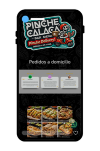
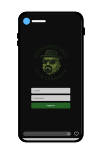
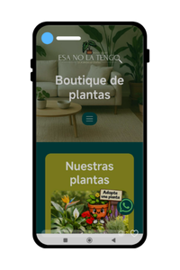
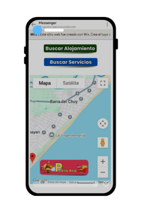
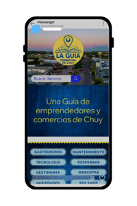

Sistema de ventas con carrito de compras y pedidos directos por WhatsApp, pensado para simplificar la gestión y aumentar las ventas.
Ver sitio
Sistema de reserva de producto, ingreso a usuarios, control de stock, inventario, base de datos e historial de reservas de socios o clientes.
Ver sitio
Tienda online de plantas con un diseño cuidado y una experiencia pensada para conectar con el cliente, facilitar la compra y destacar cada producto.
Ver sitio
Guía comercial digital que reúne emprendimientos, servicios y propuestas locales, facilitando la conexión entre visitantes y negocios de la zona.
Ver sitio
Plataforma digital que organiza comercios y servicios del Chuy, pensada para mejorar la visibilidad de emprendedores y simplificar la búsqueda de información.
Ver sitio